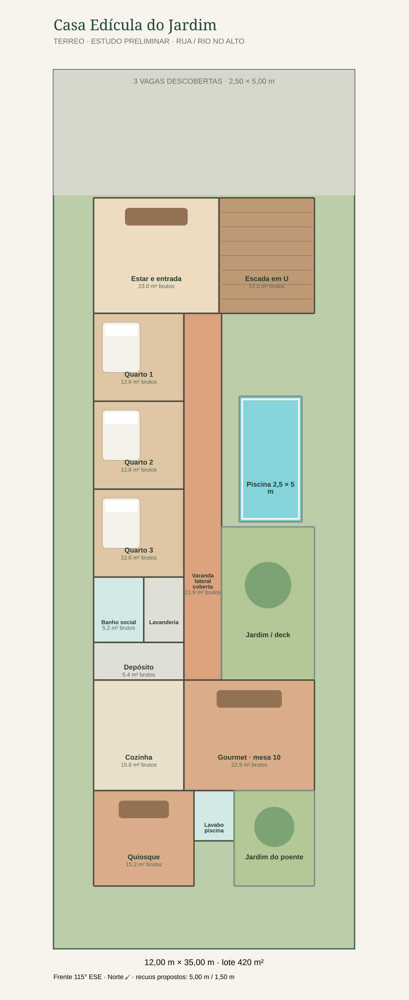
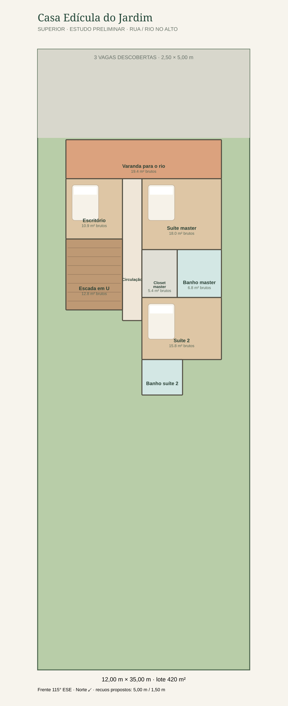
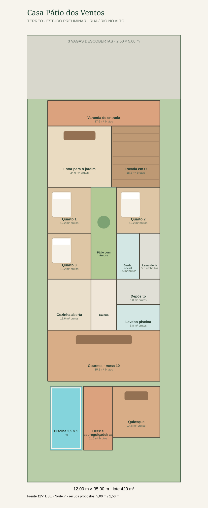
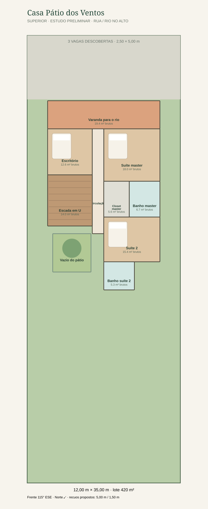

O terreno tem 420 m² e a frente se volta para a rua e o rio. Os desenhos propõem três quartos no térreo, varanda superior para o rio e uma piscina pequena com espaço para conviver.
Casa Edícula do Jardim
Os dormitórios se alinham na lateral, ligados por uma varanda coberta que olha para o pátio. A piscina ocupa a faixa livre ao lado dos quartos; no fundo, cozinha, gourmet e quiosque formam um pequeno conjunto de convivência.
Piscina 2,50 × 5,00 m



O que distingue
Circulação pela varanda, vista para o jardim e lazer espalhado ao longo do lote.
Próximo ajuste
Ampliar o gourmet: os 22,9 m² brutos do esboço ainda ficam abaixo da meta confortável de 30–45 m² do programa.
Casa Pátio dos Ventos
Os dormitórios se organizam dos dois lados de um pátio com árvore. A área social segue até o fundo, onde uma mesa grande se abre para o deck, a piscina e o quiosque.
Piscina 2,50 × 5,00 m



O que distingue
Um pátio central traz o jardim para dentro da casa; a piscina fica nos fundos junto ao espaço gourmet.
Próximo ajuste
Ampliar a circulação superior, desenhada com 0,90 m, para aproximá-la da meta confortável de 1,10 a 1,20 m.
Antes de transformar em projeto.
A Lei Complementar 34/2022 estabelece que os afastamentos dependem do zoneamento e do número de pavimentos. Seus artigos 139 a 141 remetem os parâmetros à tabela pertinente; o art. 64 remete os núcleos urbanos ao Anexo 08.
O lote ainda precisa de identificação oficial da zona e confirmação do regulamento do condomínio. Os recuos de 5,00 m na frente e 1,50 m nas laterais e fundos são hipóteses do briefing, não uma aprovação legal. Confirmar também taxa de solo natural, vagas, APP e regras do Código de Obras.
Estudo preliminar: o enquadramento e as soluções construtivas dependem de levantamento do lote e análise de profissional habilitado.